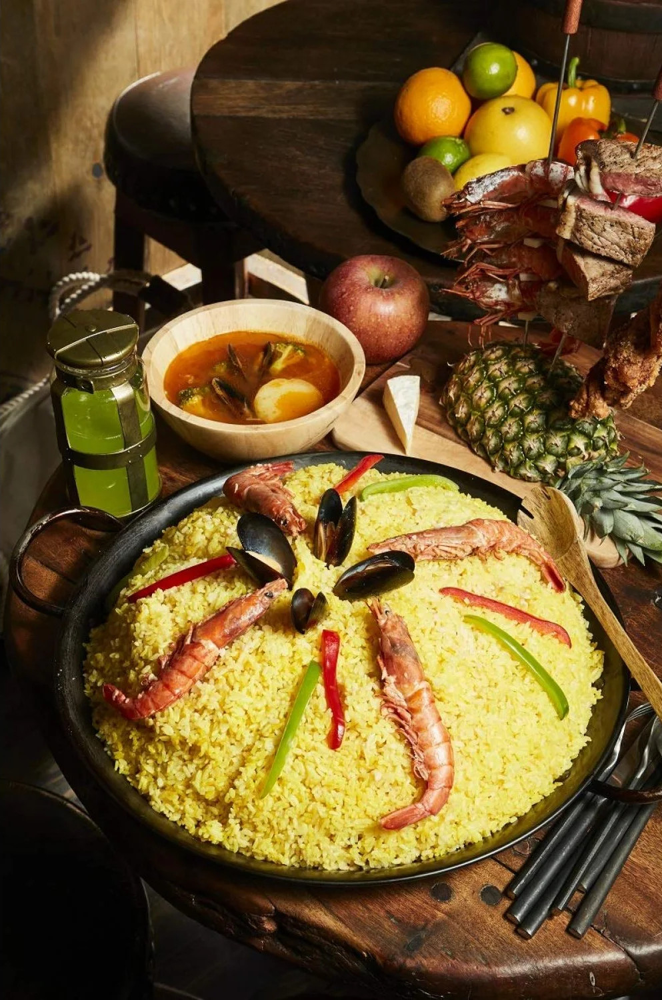

Meowscular Chef's Platter: Seafood Paella

Hot and hearty seafood paella made from freshly-hunt Juratodus
Serves: 8-10
Ingredients:
- 1 onioin
- spring onions
- 1 red bell pepper
- 1 carrot
- 2 cups dry white wine
- 3 cups paella rice
- 2 cups (400 ml) stock
- 14 oz or 400 ml tomato paste (canned tomatoes work as well)
- 4 large prawns
- 4 mussels, clean + debearded
- Baby cuttlefish
- Green onions
- Green peas
For shrimp stock:
- 1 lb or 500 g jumbo shrimp
- >vegetable oil
- 1 carrot, cut into 3 inch portions
- 1 celery stalk, cut into 3 inch portions
- 1 large onion, quartered
- 2 cloves garlic, smashed
- 1-2 parsley stems
- 1 tsp black peppercorns
- 1 bay leaf
- 1 Liter water
Steps:
- Cut onion in small pieces.
- Heat oil in a large pan over medium heat.
- Add onion and spring onion and fry until golden.
- Slice bell pepper and carrotinto long strips. Add to the pan and fry for 2-3 minutes.
- Deglaze with wine. Add rice and stock then mix todether.
- Add tomato paste and mix everything once more.
- Preheat the oven to 375 °F (190 °C).Transfer rice into large bowl and put into oven for 30 minutes.
- Meanwhile, heat oil in pan. Fry prawns, mussels and baby cuttlefish.
- Take out the rice. Add cuttlefish, green onions and peas. Mix together and put in large frying pan (or bowl) for serving.
- Put prawns and mussels on top of rice in cross-like pattern and serve.
For shrimp stock:
- Remove the shells from the shrimp. Reserve or freeze the shrimp for later use.
- Add the oil to a large stock pot and begin heating over medium-high heat.
- Add the shrimp shells, cook until the shells brighten in color and become aromatic, about 2-3 minutes.
- Add the remaining ingredients and bring the stock to a boil.
- Reduce the heat to low and allow the stock to simmer for 45 minutes to 1 hour.
- Strain and reserve the stock.
Back to main